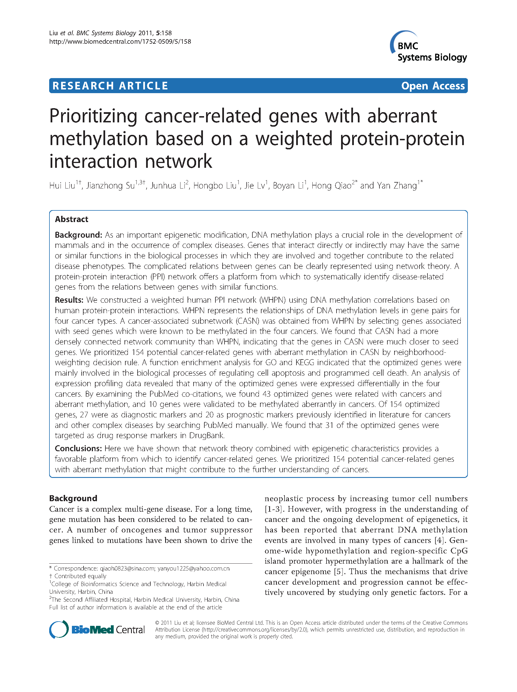
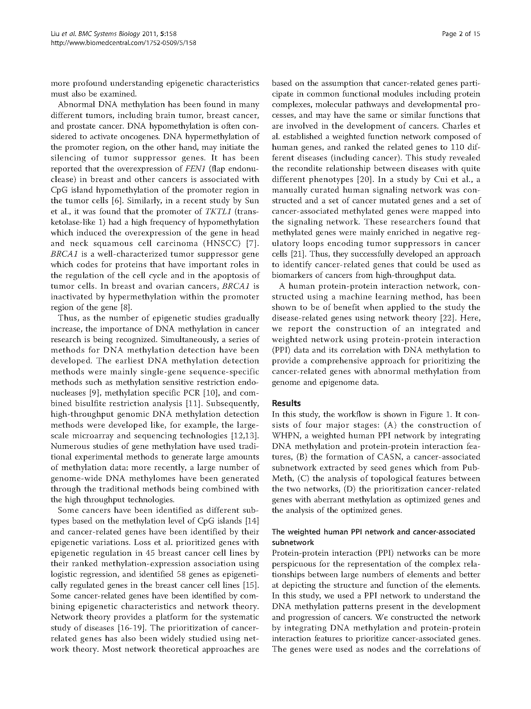
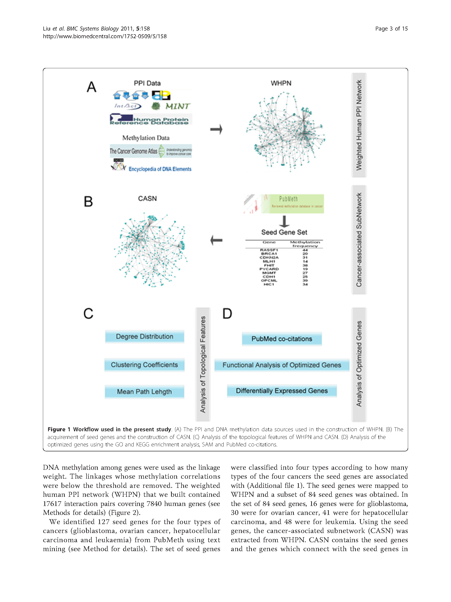
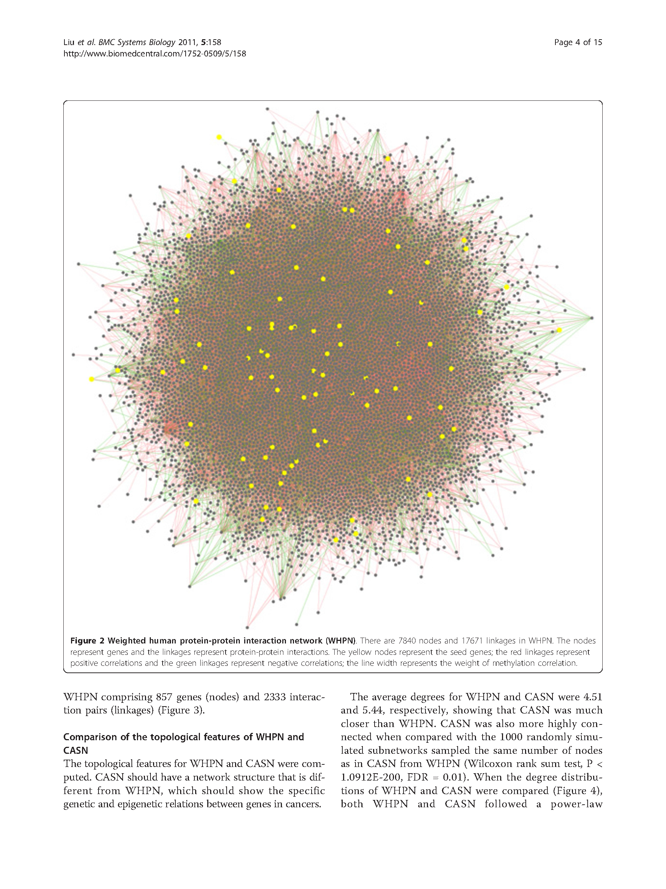
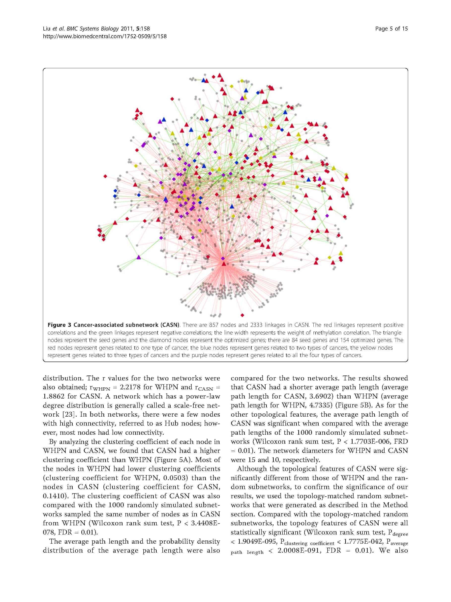
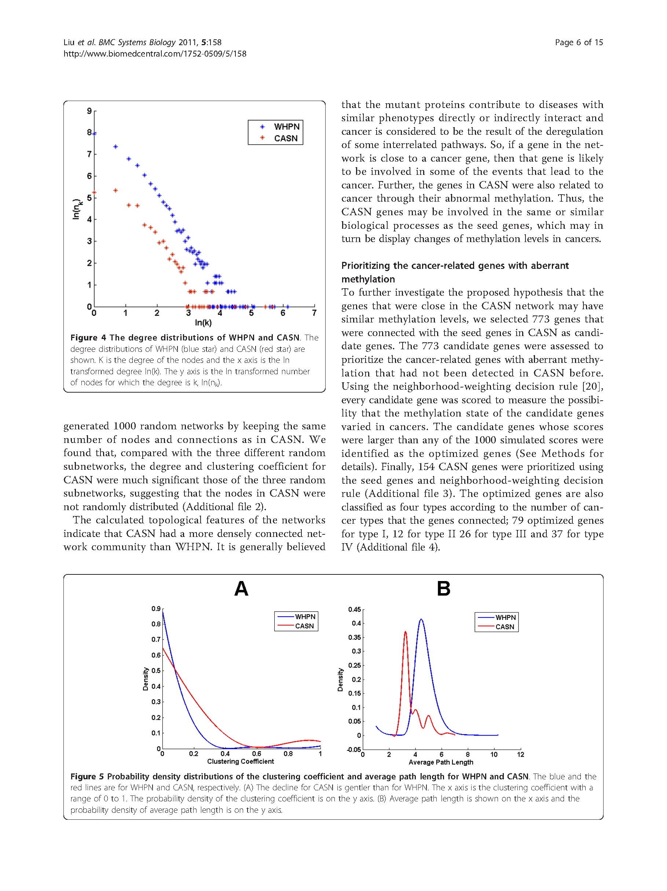
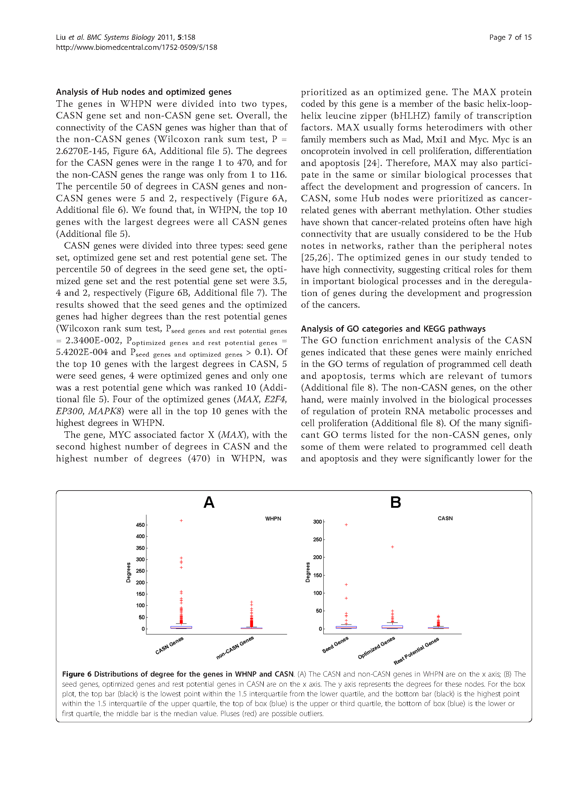
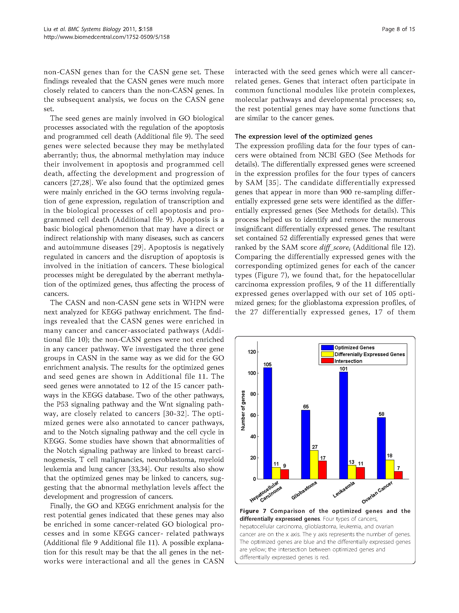

Search Terms
Prioritizing cancer-related genes with aberrant methylation based on a weighted protein-protein interaction network
by Hui Liu, Jianzhong Su, Junhua Li, Hongbo Liu, Jie Lv, Boyan Li, Hong Qiao, Yan Zhang
Published 25 July 2011. Last updated March 30, 2016 at 5:00 PM
As an important epigenetic modification, DNA methylation plays a crucial role in the development of mammals and in the occurrence of complex diseases. Genes that interact directly or indirectly may have the same or similar functions in the biological processes in which they are involved and together contribute to the related disease phenotypes... read more
Papers Categories
Search








R-Score: 81%
-
Databases
-
Reuse subcomponents
- Human Protein Reference Database (HPRD) [43]
- IntAct [44]
- Database of Interacting Proteins (DIP) [45]
- Molecular INTeraction Database (MINT) [46]
- Biomolecular Interaction Network Database (BIND) [47]
- TCGA (The Cancer Genome Atlas)
- ENCODE
- UCSC Genome Browser
- PubMeth
- DAVID [53]
- PubMed
-
ID mapping
- Identifiers were mapped to the corresponding Entrez Gene IDs using the cross-reference files from Entrez Gene, the HUGO Gene Nomenclature Committee (HGNC) [48] or Biomart [49]
- Entrez Gene IDs
- Seed gene set obtained using the data from Pubed was mapped into the weighted human PPI network
-
Search Terms
- Keywords: glioblastoma, ovarian cancer, hepatocellular carcinoma and leukemia
- NCBI GEO (GSE4290, GSE14811, GSE5788 and GSE18520)
- Pubmed
-
Dataset
-
File
- DAVID
-
File
-
Reuse subcomponents
-
Tools
-
Tool
- Cytoscape
- PubMeth cancer-centric search tool
- SAM was performed using the R package samr
- Version
- Input parameters
-
Tool
-
Methods
-
Statistics
- Test name
- Pearson correlations
- SAM method[ [35]
- Significance threshold
- If the true value was either in the top five percent or in the bottom five percent of the ranked correlations for the perturbed gene pairs (P value < 0.1)
- Pearson threshold
- If ni was > 900, then gene i was identified as a differentially expressed gene and the diff_scorei for this gene was defined as, 10 0 0 d diff scorei = j=1 ij ni
- Notation
- r is the index for the distribution. According to degree (connectivity) of a node i, ki, is defined as the number of notes which the node i connects. And the average degree of the network is the average value.
- dij is the SAM score for gene i in the random dataset j.
- If the degree of a note i is ki and the edge number of the linked neighbor notes is Ei, the clustering coefficient of the note i is definition of the distance between two nodes is the shortest path con- necting the two notes, and the network diameter is the maximum distance between any two notes, that is D=max(dij) forall i,j.
- Candidate genes are defined as the genes that connect to seed genes ωij represents the linkage weight that between the candidate gene i and the seed gene j, viz. the Pearson correlation of the DNA methylation between the two genes.
- ωij represents the linkage weight that between the candidate gene i and the seed gene j, viz. the Pearson correlation of the DNA methylation between the two genes.
- Formulas
- p(k) = ak−r
- Ci = 2Ei/(ki(ki − 1))
- L=1 dij
- Si = |ωij|
- Test name
- Simulations
- Scripts
- Topology-matched random subnetworks were generated by the method described by Li et al. in an earlier study [51].
- The cancer and control samples in the datasets were re-sampled 1000 times taking care to maintain the same ratio of control to cancer samples as in the original dataset.
- Inputs
- Divided into three subsets of equal size based on degrees and clustering coefficients.
- Three degree sets with the three clustering coefficient sets
- Scripts
-
Experimental
- Cell line
- HepG2 cell line
- K562 cell line
- Kit
- Infinium HumanMethylation27 BeadChip
- Company: Illumina
- Cell line
-
Statistics
Leave a Comment:

Jessie Dun March 25, 2016 at 9:30 PM
I've added the Liu 2011 paper to the system. Let's discuss it.
Eni Halilaj March 25, 2016 at 9:30 PM
The simulation inputs seem to be missing.